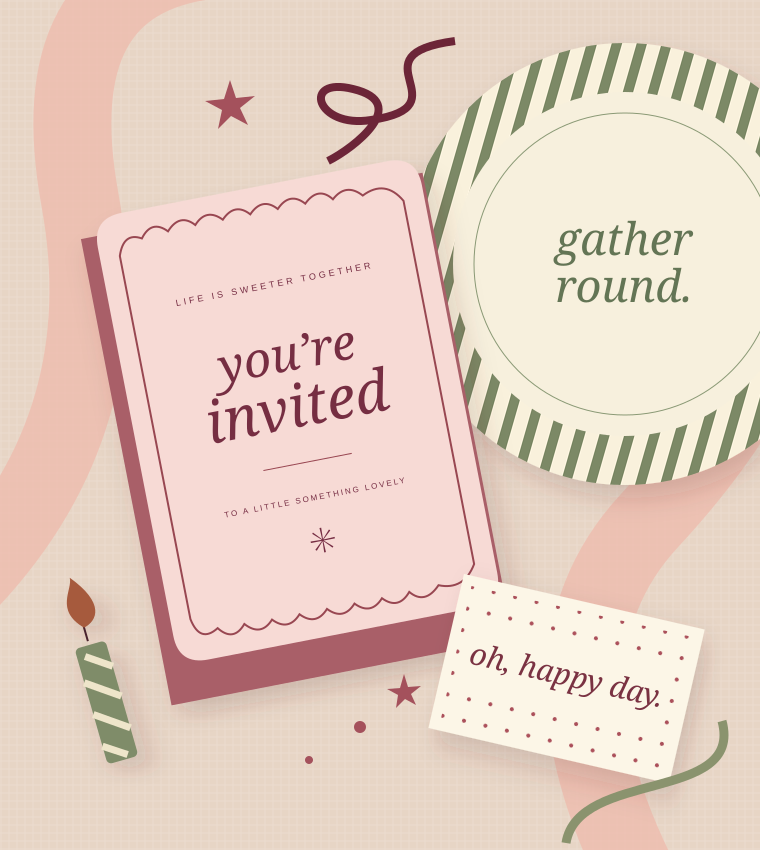

WEDDING & BRIDAL SHOWER
Lauren Mundy
“Margie is truly a joy to work with!”
Lauren praised the personalized wedding and shower stationery.
Google review · shown as 2 years ago when checked
See Google reviews (opens in a new tab) ↗PAPER. PARTIES. PERFECT LITTLE DETAILS.
The invitation that feels like you. The table that brings everyone together. Find a little inspiration for your next celebration, right here in Jasper.

A CELEBRATION STARTS HERE
From your first idea to your finishing touches.
Find your place to start.
A LOCAL SHOP WITH A PERSONAL TOUCH
Occasions of Jasper brings custom paper and party details to downtown Jasper. Its roots are in Margie Vaught’s invitation design business, which grew into a storefront in 2015.
Get to know the story →KIND WORDS, SHARED LOCALLY
WEDDING & BRIDAL SHOWER
“Margie is truly a joy to work with!”
Lauren praised the personalized wedding and shower stationery.
Google review · shown as 2 years ago when checked
See Google reviews (opens in a new tab) ↗BIRTHDAY PARTY
Laura appreciated the birthday items and help packaging balloons for her daughter’s party.
Google review · shown as 3 years ago when checked
See Google reviews (opens in a new tab) ↗Public business information describes party supplies, entertaining serveware, and custom invitation work. Ask the shop about current styles, quantities, and anything you have in mind.
Yes. Bring your event date, wording, guest or household count, and a few style references. Confirm design options, proofs, revisions, pricing, and production timing directly with the shop.
As soon as your event plans begin to take shape. Timing depends on the project and availability. Call before making plans around a specific completion date; no turnaround time is guaranteed on this website.
Google Maps lists 525 Main Street in downtown Jasper. Listed hours are Monday, Tuesday, Thursday, and Friday 10am–6pm; Wednesday 10am–7pm; Saturday 10am–4pm; Sunday closed. Check the live listing or call before traveling.
This concept website does not accept orders, payments, or messages. The planner makes notes for you to copy. Call (812) 848-2050 or contact the business through its Facebook page to discuss your plans and communication needs.
Choose larger text or a higher contrast display.
YOUR NEXT REASON TO GATHER
A wedding. A birthday. A just-because.
Start with your idea. Bring the details along.